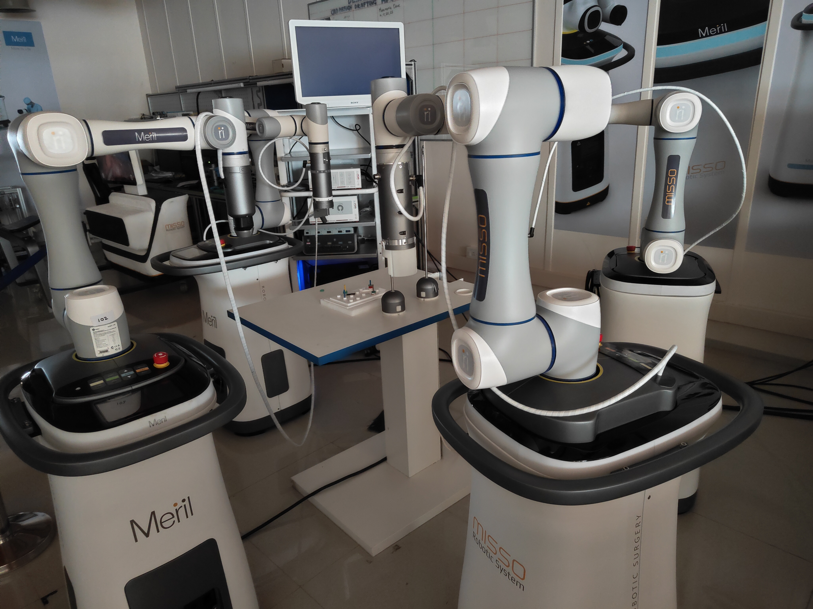

Sr. Embedded Software Engineer Meril Endosurgery, 2024
MISSO Robot Assisted Laparoscopic and Orthopaedic Surgery
Chennai, India
Meril is a well-established name in the global medical device landscape, with
its research and manufacturing capabilities—particularly in cardiovascular
stents and orthopaedic implants—significantly strengthening the Indian healthcare
sector. During my tenure at Meril, I worked in the R&D Endosurgery & Robotics
department, contributing to the development of the company’s in-house robotic
surgery platforms.
MISSO Robot Assisted Laparoscopy
My primary responsibility was the design and development of embedded firmware
for various subsystems of MISSO, Meril’s in-house robot-assisted laparoscopy
platform.
I led the end-to-end firmware development for Meril’s custom EtherCAT-based motor
driver, enabling precise BLDC control for actuating both the laparoscopic
instrument DOFs and the joints of the in-house 7-DOF robotic arm.
Additionally, I took ownership of sourcing and integrating high-quality 7-inch
touch displays for our system GUI. This involved performance tuning and
optimising a Linux-based real-time OS running on an Intel Atom x6425 processor,
ensuring responsive and deterministic UI performance under constrained hardware
conditions.
MISSO Robot Assisted Orthopaedics
As part of a cross-functional initiative, I contributed to the development of
Meril’s orthopaedic surgical robot.
My role involved scaling and automating the deployment of our custom Linux-based
operating system across more than 200 systems. I implemented scripting-based
automation to ensure consistent configuration, reliability, and reduced
manufacturing time.
Delegation to China for CMEF2024
I was selected as part of a small company delegation to attend CMEF 2024 in
Shanghai, China. There, I gained hands-on experience with six different Chinese
surgical robotic systems, covering both single-port and multi-port systems.
Our delegation also visited 16 robotics startups and research institutes. These
spanned warehouse automation robots, humanoids, quadrupeds, exoskeletons, and
advanced bionic systems. The exposure broadened my understanding of robotic
architectures and global trends in medical and industrial robotics.
Beyond the technical experience, the visit highlighted cultural contrasts
between India and China—ranging from food to workplace communication—and offered
valuable international perspective.


EtherCAT based Motor Driver For BLDC Control →
Delegation to China →